Abstract
Synchronization is a universal phenomenon observed in systems ranging from firefly swarms to circadian clocks and neuronal populations. In the brain, synchronized neural activity plays a crucial role in information processing, cognition, and behavior, while abnormal synchronization is associated with neurological disorders. Here, we investigate the emergence of large-scale brain synchronization using the Kuramoto model on a structural connectome derived from the Automated Anatomical Labeling (AAL) atlas.Based on it,we construct a dynamical model and reproduce the collective synchronization , demonstrating that the phenomenon is strictly governed by the coupling parameter. Building on this physical baseline, we systematically investigate the topological drivers of the system, revealing the disproportionate role of network hubs in facilitating global phase transitions and evaluating the network's dynamical vulnerability to localized structural perturbations. We further extend this framework to circadian resynchronization, using a forced Kuramoto model to illustrate how coupled neural oscillators recover coherence after abrupt time-zone phase shifts. Finally, we translate these theoretical insights into a clinical context by comparing empirical connectome data from Alzheimer's disease patients and healthy controls elucidating the clinical significance of disrupted synchronization dynamics.
Keywords: Synchronization; Kuramoto model; Brain networks; AAL atlas
Introduction to Synchronization Phenomenon
Synchronization originates from the Greek words syn (together) and chronos (time), describing a set of universal phenomenon that interacting oscillators tend to coordinate rhythms to a global frequency and phase. The scientific study of synchronization can be traced back to the observation and study of the mechanical synchronization of two pendulums coupled with a common support by Huygens in the 17th century [huygens1673]. Since then, synchronization has been modeled through a uniform framework in physical, chemical, and biological systems [pikovsky2001] [strogatz2003] [acebron2005].
Biological synchronization occurs at living systems across different scales. In population scale, a swarm of fireflies can form synchronized burst flash [buck1988] [strogatz1993] [sarfati2022chimera]. In organism and tissue scale, synchronization is essential for the coordinated contraction of cardiac tissue and the generation of coherent neural activity in the brain [glass2001] [buzsaki2006]. At the molecular level, proteins involved in circadian clocks can maintain highly synchronized biochemical oscillations. A well-known example is the KaiABC system in cyanobacteria, which produces robust 24-hour rhythms through collective molecular interactions [nakajima2005] [han2023determining].
Among these phenomena, brain synchronization is particularly intriguing because of the complexity across spatiotemporal scales of brain networks. Neural synchronization arises from interactions among neurons and brain regions connected through anatomical networks [varela2001] [buzsaki2004]. Such coordinated activity may play a key role in information integration, communication between brain regions, perception, and attention [fries2015] [deco2011], while disruptions of synchronization may lead to neurological disorders including epilepsy, Parkinson’s disease, and schizophrenia [uhlhaas2006] [hammond2007]. Understanding how large-scale synchronization emerges from structural brain networks therefore remains a central challenge in contemporary neuroscience.
From a systematic perspective, synchronization across systems may share common principles governing their collective behavior. Motivated by this universality, Kuramoto proposed a simple phenomenological model, where oscillators are coupled with others through a simple sinusoidal interaction [kuramoto1975] [kuramoto1984]. Despite its minimal formulation, the model successfully captures the collective transition from incoherent dynamics to a synchronized state as the coupling strength exceeds a critical threshold [strogatz2000] [acebron2005]. Furthermore, Kuramoto model serves as a null model and could be extended given connection network topologies, heterogeneous interactions, time delays, stochastic fluctuations, etc. [arenas2008] [dorfler2014] [rodrigues2016].
In this work, we adopt the Kuramoto model to investigate synchronization in a realistic brain network. We first review the basic theory of the Kuramoto model and its major extensions (Sec. sec:kuramoto). We then construct a weighted structural connectome using data from the Automated Anatomical Labeling (AAL) atlas (Sec. sec:connectome). Then, numerical simulations are performed to explore how coupling strength, intrinsic frequency heterogeneity, network topology, disease and circadian clock influence the emergence of large-scale synchronization in the brain (Sec. sec:brain_sync$\sim$sec:circadian).
Review of Kuramoto Model}\label{sec:kuramoto
Kuramoto Model Setups
To characterize the collective behavior of a group of $N$ oscillators, we define the joint angular position of them $\bm{\theta}=(\theta_1,\theta_2,\cdots,\theta_N)^\top$ as the state variable of the system.
Unlike man-made clocks with ignorable frequency difference, the intrinsic frequency of natural oscillator exhibits may get dispersed distribution $g(\omega)$ near the central frequency $\bar{\omega}$. Here, we take a simple Gaussian distribution $\omega_i\overset{\rm i.i.d.}{\sim}\mathcal{N}(\bar{\omega},\sigma^2)$.
The general kinetic equation describing the phase change of each oscillator coupled with all other oscillators is expressed as
where $K$ is the homogeneous coupling strength between pair of oscillators.
The coupling interaction $\mathcal{F}(\cdot)$ features two basic properties: (i) phasic periodic boundary condition $\mathcal{F}(\Delta\theta+2\pi) \equiv \mathcal{F}(\Delta\theta)$; (ii) phasic exchange asymmetry $\mathcal{F}(-\Delta\theta)=-\mathcal{F}(\Delta\theta)$. Given the Fourier theorem, the fundamental component of $\mathcal{F}(\cdot)$ is adopted, i.e.,
Then, we get the basic Kuramoto model [kuramoto1975]
Emergent Synchronization and Mean-Field Prediction
Taking two-oscillator simplified model, suppose that they could get synchronization driven by $\mathcal{F}(\cdot)$, then at steady state $\dot{\theta}_1^{\rm st}=\dot{\theta}^{\rm st}_2=(\omega_1+\omega_2)t/2$, and we get
meaning that the coupling strength $K$ has a lower boundary, under which the system could not maintain synchronization.
For $N$ oscillators, we first introduce an order parameter to characterize the collective synchronization level
\tilde{z}(t)=\frac{1}{N}\sum_{j=1}^N\mathrm{e}^{\mathrm{i}\theta_k}=R(t)\mathrm{e}^{\mathrm{i}\Theta(t)},\]
which, as shown in Fig. fig:order, describes the average phase of oscillators. The norm $R(t)$ describes the real-time synchronization level. For $R\rightarrow +1$, then oscillators get tight synchronization, while for $R\rightarrow 0$, the system is completely out of synchronization.
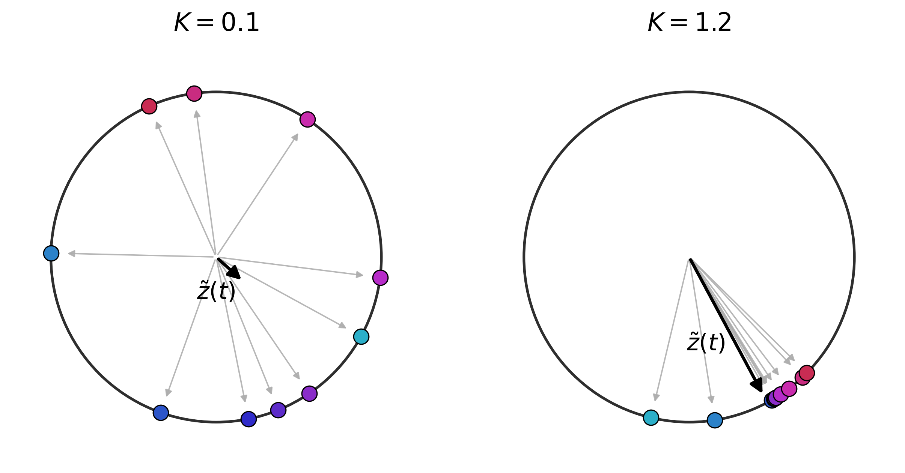
Suppose that all oscillators get synchronization, then at steady state, we have $\tilde{z}(t)\rightarrow R\mathrm{e}^{\mathrm{i}\bar{\omega}t}$. However, it is still difficult to analyze the behavior of $N$ ODEs. Therefore, we adopt a mean-field assumption that the mutual interaction $\sin(\theta_j-\theta_i)$ could be replaced by the average interaction $R\sin(\bar{\omega}t-\theta)$, yielding a greatly simplified 1-dimensional dynamic equation
Changing the coordinates $\phi_i:=\theta_i-\bar{\omega}t$ to get the automatical equation
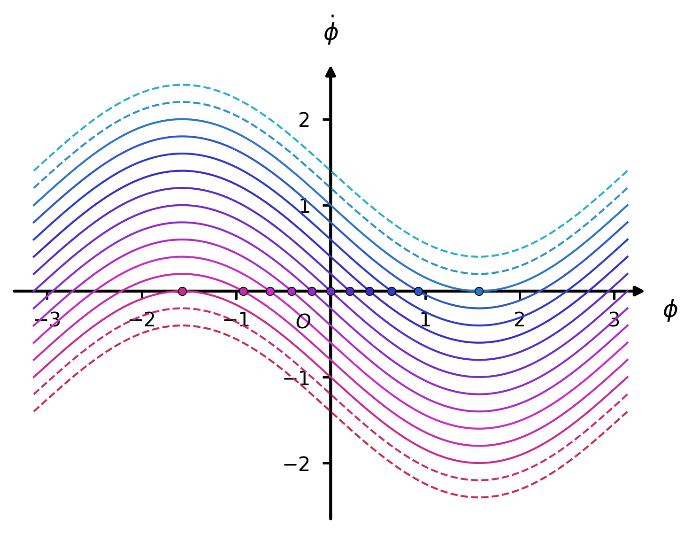
For those oscillators with $|\nu_i|\leq KR$, the dynamic equation has fixed point
showing that these oscillators could get synchronization; while for those oscillators with $|\nu|_i>KR$, they could not join the synchronization group.
Under the infinite oscillator limit, the system can be defined by probability distribution of oscillators $P(\phi,\nu,t)$ in phase space, and the corresponding Fokker-Planck equation is
At steady state, the time-averaged contribution of out-synchronized oscillators to the distribution measures zero. They chase the group and surpass them at each round and hence the flux is approximately zero. In that case, the steady state distribution
P^{\rm st}(\phi,\nu)=\updelta [\phi-\phi^*(\nu)]=\updelta \left(\phi-\arcsin\frac{\nu}{KR}\right) .\]
Noting that the mean-field approximation is not an expansion of small values and may lead to observable deviation, we have to testify whether the order parameter $\tilde{z}^{\rm st}=R\mathrm{e}^{\mathrm{i}\bar{\omega}t}$ could be achieved based on the distribution (eq:distribution) derived from the mean-field approximation, which gives
Plugging the steady distribution and noting that the imaginary part of LHS and RHS can be eliminated, we get the self-consistent equation
Expanding the PDF $g(\omega)$, we get
\psi (R;K)&=\left\{\sum_{t=0}^{+\infty}\frac{\sqrt{\pi}}{2}\frac{\Gamma(t+\frac{1}{2})}{(t+1)!(2t)!}g^{(2t)}(\bar{\omega}) K^{2t+1}R^{2t}\right\}-1\\
&\simeq \left(\frac{\pi g(\bar{\omega})}{2}K-1\right)+\frac{\pi g"(\bar{\omega})}{16}K^3R^2+\mathcal{O}(K^5R^{4})\\
& =0.
\end{aligned}\]
Noting that $g"(\bar{\omega})<0$, as $K$ grows larger, solution $R^*(K)$ to the equation $\psi (K;R)=0$ occurs at a saddle-node bifurcation point
near which the relation between $R^*$ and $K$ follows a scaling law
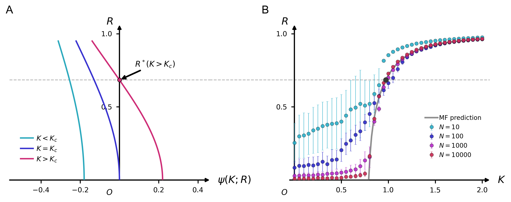
Extension to Heterogeneous Networks}\label{subsec:hetero
The Kuramoto model successfully capture the key feature of synchronization phenomenon, i.e., the emergence of collective behavior, with minimum parameters and setups. To match biological data and characterize more intriguing properties related to the synchronization, the Kuramoto model can be extended to heterogeneous networks. Given that natural complex networks normally feature high heterogeneity, the Kuramoto model can be written as
where the connection adjacency matrix $\mathbf{K}=(K_{ij})$ encodes the coupling architecture between oscillators.
Different network architectures can strongly shape the route toward synchronization by changing how phase information propagates across the system. To illustrate how network topology affects the synchronization transition, we compare three representative coupling structures under the standard Kuramoto model:
- Global coupling: fully connected network where each oscillator interacts with all others, representing an idealized mean-field upper bound. In the simulation, the network contains \(N=100\) oscillators and has average degree \(\langle k\rangle=99\).
- Erdős--Rényi (ER) random graph: random network where connections are formed independently, serving as a homogeneous sparse-network baseline. In the simulation, the connection probability is set to \(p=0.10\), giving an average degree \(\langle k\rangle=(N-1)p\approx10\).
- Barabási--Albert (BA) scale-free network: heterogeneous network generated through preferential attachment, capturing the hub-dominated organization commonly observed in complex systems. In simulation, we set \(m=5\), giving an average degree \(\langle k\rangle=2m=10\).
The ER and BA networks are controlled to have approximately the same average degree, while the global coupling network serves as the fully connected reference. This design allows a fair comparison between random and scale-free topologies under identical connection density, so that the observed differences mainly arise from network architecture rather than the total number of connections.
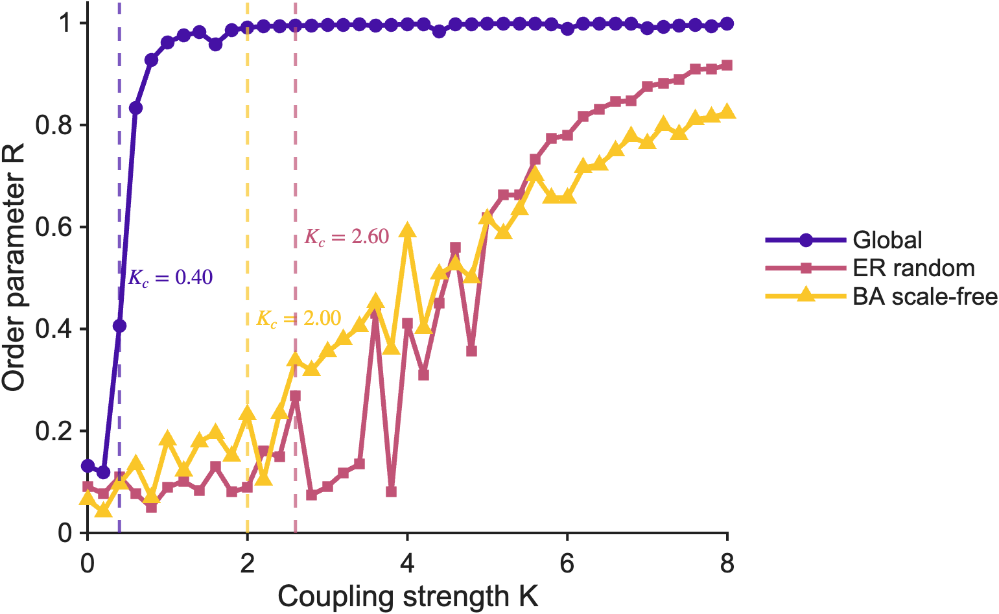
As shown in Fig. fig:kc_comparison, the three networks display distinct synchronization transitions. Global coupling synchronizes most easily with \(K_c=0.40\), because every oscillator directly senses the mean field of the entire population. The BA scale-free network achieves global synchronization at \(K_c=2.00\), notably lower than the ER random network with \(K_c=2.60\), despite both having the same average degree. The ER random graph requires the strongest coupling to synchronize, reflecting the absence of efficient information relay structures. The lower \(K_c\) of the BA network demonstrates that network heterogeneity, specifically the presence of hub nodes, promotes global synchronization. Hub nodes, once locked to the mean field, can efficiently recruit their many neighbors into the synchronized cluster. This result provides insight into why real brain networks, which exhibit hub-like and modular properties, may support rapid functional integration.
Noise can also be incorporated to describe fluctuation in biological systems. In this case, the general heterogeneous Kuramoto model becomes
=
\omega_i
+
\frac{1}{N}\sum_{j=1}^{N}K_{ij}\sin(\theta_j-\theta_i)
+
\zeta_i(t),\]
where \(\zeta_i(t)\) denotes stochastic perturbation applied to oscillator \(i\).
Connection Architecture Based on the AAL Atlas Connectome}\label{sec:connectome
Biological Definition of Nodes and Edges
To authentically simulate the collective dynamical behavior of the brain at a macroscopic scale, we employed an empirical network architecture based on real human anatomical data. The spatial topological foundation of our model utilizes the Automated Anatomical Labeling (AAL-90) atlas, partitioning the cerebral cortex into $N = 90$ macroscopic brain regions [Heuvel2012] [Skoch2022]. In the dynamical model, each brain region is abstracted as an oscillator with an intrinsic rhythm.
Data Cleaning, Graph Mapping and Network Extraction
To construct a high-fidelity physical backbone for the Kuramoto model simulation, we subjected the raw structural connectivity matrices from multiple subjects to a series of rigorous mathematical cleaning and group-level reconstruction procedures.
Upon importing the multi-subject tensor data (num\_subjects $\times 90 \times 90$), we first applied physical constraints to the matrices at the individual level:
- Absolute Symmetrization: Based on the physical assumption that brain structural connectivity forms an undirected graph, we forced the matrices to be diagonally symmetric, i.e. $\mathbf{M} = (\mathbf{M} + \mathbf{M}^\top)/2$), to ensure balanced coupling interactions.
- Self-Connection Removal: The diagonal elements of the matrices $M_{ii}$ were strictly set to zero, eliminating the interference of intra-regional self-feedback loops.
Considering anatomical variations across individuals, our study adopted a consensus thresholding strategy:
- Individual Binarization: The connection weights for all subjects were first binarized, retaining only topological existence (1 for presence, 0 for absence).
- \textbf{40\
The result is showed in Fig. fig:aal_network
Topological Heterogeneity and Identification of Super Hubs
Based on the extracted group consensus network, we further quantified the topological heterogeneity of the architecture. Our computational logic utilized Node Degree—the number of valid edges directly connected to a given brain region as it is the most intuitive metric with the clearest physical significance.
- 85th Percentile Cutoff Rule: To precisely target core regions for subsequent "localized perturbation and rescue" experiments, we calculated the degree distribution across all 90 nodes and adopted the 85th percentile as a rigorous cutoff threshold.
- Super Hubs: The minority of brain regions with degrees greater than or equal to this threshold were strictly defined as "super hubs". Forming the information convergence centers of the brain network,
Dynamical Significance of the Architecture
Through the rigorous pipeline described above, we obtained a highly refined brain adjacency matrix $\mathbf{M}_{\rm group}$ with distinct topological features. In the following experiments, this matrix is directly injected into the Kuramoto differential equations as a spatial constraint term.
Modeling the Synchronization of Brain Networks}\label{sec:brain_sync
Hierarchical Kuramoto Dynamical Equation
We modeled the 90 macroscopic brain regions in the brain network as a set of coupled phase oscillators [Varela2001] [Schmidt2015]. The temporal evolution of the system is governed by the following nonlinear stochastic differential equation (SDE):
where $\theta_i(t)$ represents the instantaneous phase of the $i$-th brain region at time $t$. The right-hand side of the equation consists of three components:
- Intrinsic Frequency: $\omega_i$ is independently sampled from a Gaussian distribution $\mathcal{N}(0, 0.5^2)$ with a mean of 0 and a standard deviation of 0.5, reflecting the heterogeneity of working rhythms across different brain modules.
- Deterministic Drift: $\lambda$ denotes the global coupling strength. The network topological matrix $M_{ij}$ serves as the spatial constraint.
- Stochastic Diffusion: $\sigma$ is the noise intensity set to $\sigma = 0.2$, and $dW_i$ denotes the standard Wiener process. This term simulates the biochemical noise of synaptic transmission and background thermal fluctuations faced by the brain during spontaneous activity.
Initial Conditions and Synchronization Order Parameters
To assess the system's dynamic integration capacity from disorder to order, the initial phases $\theta_i(0)$ of all nodes were uniformly and randomly initialized within the interval $[0, 2\pi]$, representing that the system initially resides in a completely chaotic, desynchronized state.
This study utilizes two order parameters, $R$ and $R_{\rm link}$, to characterize global dynamic coherence [Lachaux1999]. The first order parameter $R$, representing mean phase coherence, is defined based on the complex number $\tilde{z}(t)$ by Eq.(eq:order). The variable $R(t)$ serves as a measure of the degree of phase synchronization among the population of $N$ oscillators, and $\Theta(t)$ is the average combined phase of all oscillators. By averaging $R(t)$ over time, we obtain the first order parameter $R$.
The second order parameter, $R_{\rm link}$ (mean edge synchronization), provides additional insights into the network state. The edge synchronization $C_{ij}$ between nodes $i$ and $j$ is defined as:
These values collectively constitute the simulated functional connectivity matrix $\mathbf{C}$. By integrating the average edge synchronization levels, $R_{\rm link}$ is formulated as:
The system of differential equations was numerically solved using a Runge--Kutta solver.
Simulation Results of the Normal Brain Model
After injecting the empirical AAL-90 network $\mathbf{M}_{\rm group}$ into the aforementioned SDE engine, we recorded the temporal evolution trajectory of the macroscopic order parameter $R(t)$ for the intact network. As illustrated in Fig. fig:simulation_results, despite significant differences in intrinsic frequencies among various brain regions and continuous disruptive interference from high-intensity white noise ($\sigma = 0.2$), brain networks with larger coupling strengths are still able to overcome this resistance. This drives the entire brain to rapidly ascend from its initial disordered state and ultimately stabilize in a highly synchronized dynamical regime (near $R \to 1$). Only when the coupling strength is relatively small does the whole-brain state fail to achieve collective synchronization.
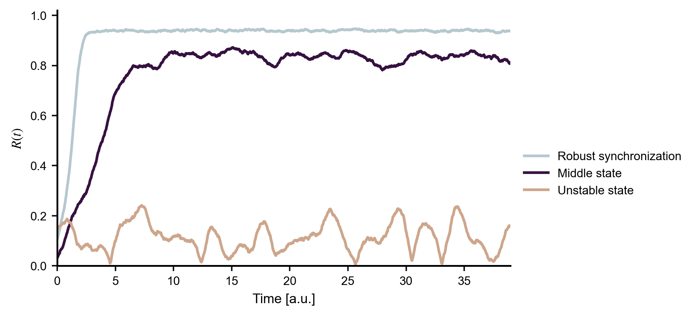
Impact of Coupling Strength on Macroscopic Collective Synchronization
Having verified the capacity of the healthy brain architecture to achieve collective synchronization, we systematically investigates the dependence of global dynamics of the cortical coupling factor $\lambda$. Through extensive parameter sweeping $\lambda \in [0, 0.05]$, we fully characterize the phase transition of the system from chaotic disorder to a highly synchronized state. We calculated three core metrics after the system reached a steady state (discarding the initial relaxation time) for each: global order parameter $R$, synchronized edge fraction $R_{\rm link}$ as mentioned before and macroscopic fluctuation $\sigma_r$ defined as the standard deviation of the global order parameter $R(t)$ over time.
The simulation results clearly demonstrate the second-order phase transition characteristics of the Kuramoto oscillators on the empirical brain topology. As the coupling strength $\lambda$ gradually increases, the system's evolution can be strictly divided into three dynamic regimes ,as shown in Fig. fig:figure3_overall.
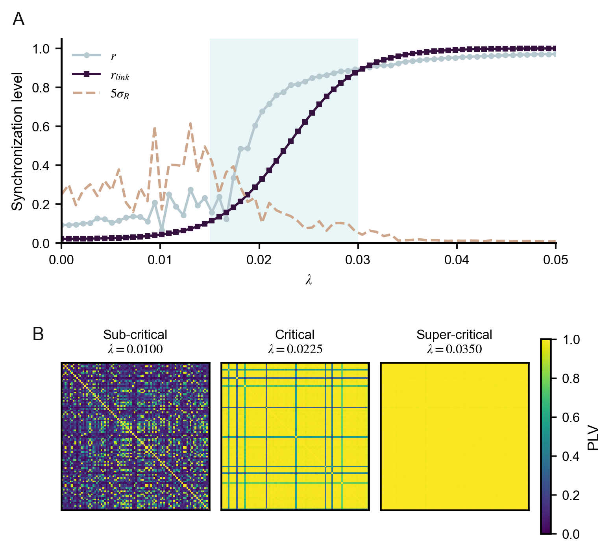
- Sub-critical state (low $\lambda$): Weak coupling between nodes fails to overcome intrinsic frequency heterogeneity and environmental noise . Both $r$ and $r_{link}$ remain at extremely low levels, indicating a chaotic state.
- Critical regime ($\lambda \in [0.015, 0.030]$): As the coupling strength crosses the critical threshold, synchronization exhibits a nonlinear burst, with both $r$ and $r_{link}$ curves climbing sharply. Notably, the system's macroscopic fluctuation reaches its peak within this interval. Such critical fluctuation indicates high dynamic instability, where brain regions undergo intense physical tug-of-war between synchronization and desynchronization,a hallmark of the real brain maintaining optimal flexibility for information processing.
- Super-critical state (high $\lambda$): With further increases in $\lambda$, the network completely overcomes noise and frequency heterogeneity. The $r_{link}$ metric saturates first, and $r$ asymptotically approaches 1, plunging the entire brain into a rigid, absolute synchronized state.
To visually depict the spatial organization rules during the phase transition, we extracted snapshots of the FC matrices across these three typical states (Fig. fig:figure3_overallB ). In the sub-critical state ($\lambda = 0.010$), the FC matrix primarily exhibits sparse and scattered local high-PLV clusters, corresponding to a few "modular" subnetworks with the tightest anatomical connections. In the critical state ($\lambda \approx 0.0225$), synchronization begins to propagate along the brain's core topological backbone, forming meso-scale synchronized clusters that span multiple modules. In the super-critical state ($\lambda = 0.035$), the FC matrix transitions to a globally homogeneous highly-connected state, signifying the complete integration of whole-brain information flow.
This parameter sweeping simulation confirms that macroscopic synchronization in the brain is strictly governed by the underlying effective coupling strength.
Topological Driving Role of Regional Modules and Central Hubs
In brain networks, macroscopic collective synchronization is not an instantaneous global mutation, but a process of gradual integration from local to global scales, heavily relying on the underlying anatomical architecture. To unveil the dynamic organizational principles at this meso-scale, wen delves into the specific roles of regional anatomical modules and central hubs during the phase transition.
Meso-scale modular partition and hub definition: Based on the spatial and functional attributes of the AAL-90 atlas, we partitioned the brain network into five classical macroscopic anatomical modules: Frontal (28 nodes), Limbic & Subcortical (22 nodes), Occipital (14 nodes), Parietal (14 nodes), and Temporal (12 nodes). Simultaneously, utilizing the extracted group consensus network matrix $\mathbf{M}_{\rm group}$, we calculated the effective degree of each node and explicitly designated the top 10 nodes with the highest connectivity as the "central hubs" of the network. In the real brain, these hubs typically bear extremely high metabolic costs for cross-modular information routing.
We computed the evolutionary trajectories of the local order parameter $r_{mod}$ within the five anatomical modules as a function of the global coupling strength $\lambda$ (as shown in Fig. fig:mesoscale_hubsA). The simulation indicates that different brain modules exhibit highly heterogeneous phase transition characteristics when subjected to identical environmental noise ($\sigma=0.2$). Due to varying degrees of topological density within each module, the critical thresholds for local synchronization display a distinct step-like distribution. Modules with the tightest internal structural connections can overcome noise at lower $\lambda$ values, initially forming locally coherent sub-networks. This phenomenon dynamically confirms the "high modularity" feature of cortical connections: the network inevitably achieves functional segregation and primary synchronization within local regions before accomplishing integration at the whole-brain scale.
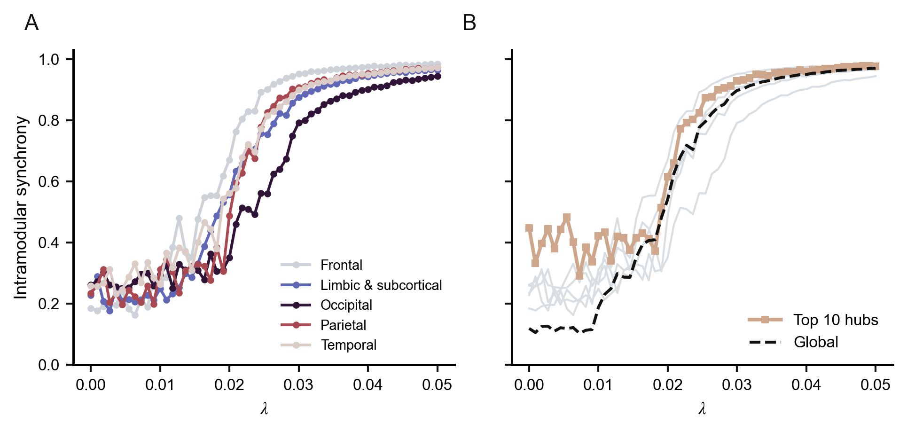
Core driving of central hubs and "rich-club" dynamics: To clarify the physical status of central hubs in the global phase transition, we intuitively compared the synchronization rate of the sub-network formed by the top 10 hub nodes ($r_{hub}$, red line) with those of the regular modules (gray lines) and the global synchronization rate ($r_{global}$, black dashed line) (Fig.fig:mesoscale_hubs b). The results reveal a profound dynamical rule: the synchronization phase transition of central hubs occurs significantly earlier and is far more robust than in any other region of the brain.
In the transition zone between sub-critical and critical states ($\lambda \in [0.015, 0.025]$), while the vast majority of regular modules are still struggling in a chaotic or semi-synchronized state, the top 10 hub nodes have already rapidly phase-locked, achieving a high degree of internal synchronization. This phenomenon is known in network science as "rich-club dynamics." These highly connected hubs are not only densely interconnected but also act as extremely stable dynamical cores, exerting an "anchoring" effect near the critical point. It is precisely under the strong mediation of these 10 super hubs that isolated local modules can bridge anatomical physical distances and ultimately be integrated into the macroscopic synchronization rhythm of the whole brain.
This insight not only explains the high information transmission efficiency of the healthy brain but also implies from a reverse perspective: should these 10 central hubs suffer targeted attacks or pathological damage, the entire macroscopic dynamics of the brain would lose its load-bearing wall, facing a catastrophic synchronization collapse.
Targeted Frequency Perturb and Whole-Brain Entrainment by Hubs
Following the revelation of the core status of hub nodes in steady-state synchronization, this section further explores their causal efficacy in driving whole-brain rhythm reorganization through "non-equilibrium" targeted frequency perturbation experiments.
Frequency tracking and targeted perturbation design: We exposed the empirical brain network $\mathbf{M}_{\rm group}$ to focal dynamical perturbations. In the Kuramoto SDE engine, we artificially injected a significant frequency offset ($\Delta \omega = +4.0$) into the intrinsic frequencies of a specific targeted group of nodes, simulating high-frequency neuromodulation or pathological discharges. The intrinsic frequencies of the remaining nodes maintained their original Gaussian distribution. To systematically evaluate the impact of topological status on frequency entrainment capacity, we tracked the effective frequency evolution of the whole brain under varying coupling strengths $\lambda$ across three parallel groups: (1) Hub Nodes: Targeting the top 10 core nodes. (2) Random Nodes: Targeting 10 randomly selected peripheral nodes as a topological control. (3) Frontal Module: Targeting the entire frontal module (comprising 28 nodes) to strictly contrast the efficacy of node "mass" versus "topology."
Topological leverage and robust entrainment of hub nodes: The simulation results (Fig. fig:kc_comparison) vividly reveal the profound constraint of network structure on dynamical propagation. In the hub nodes perturbed group (Fig. fig:frequency_perturbationA), the thick red high-frequency curve of the hubs and the frequency curves of the other four normal modules rapidly converge at a remarkably low critical coupling strength ($\lambda \approx 0.05$). This implies that the central hubs, despite accounting for only 11\
Inefficacy of random nodes and limitations of regional modules: In stark contrast, the random nodes perturbed group (Fig. fig:frequency_perturbationB)demonstrates that local stimulation of non-core nodes struggles to trigger global state transitions. Due to their location at the topological periphery, the entire brain only reluctantly converges at a significantly higher coupling threshold ($\lambda \approx 0.07$).
Even more striking are the counterintuitive results from the frontal module perturbed group (Fig. fig:frequency_perturbationC). Because the frontal module contains massive target nodes (28 nodes, nearly three times that of the hub group), its significant intrinsic "mass" successfully pulls the final synchronized frequency of the whole brain to a much higher level ($\sim 1.25$). However, lacking global topological centrality, the critical coupling strength required to entrain this whole-brain convergence ($\lambda \approx 0.06$) still lags behind that of the mere 10 hub nodes.
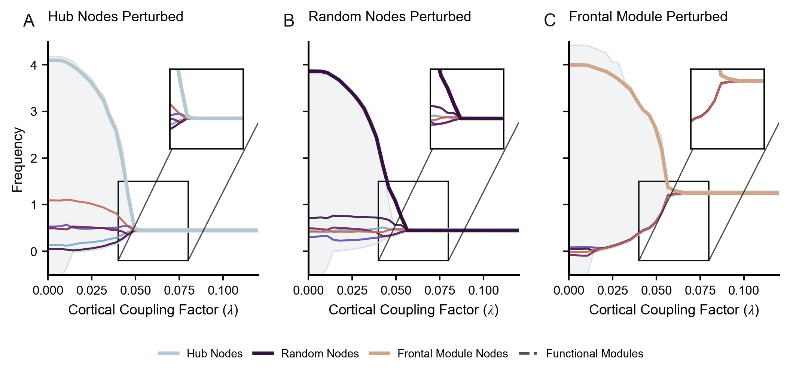
Physically, this precise comparison yields a highly clinically valuable thesis for neuromodulation. In complex brain networks, node "mass" (affected volume) may dictate the final synchronized frequency state, but network "topology" (hub centrality) dictates the absolute efficiency (the $\lambda$ threshold) of driving the entire network into that synchronized state.
Analyzing The Difference Between AD Patients and Healthy People In Network Synchronization}\label{sec:brain_sync
After delving into the topological dynamics mechanisms and entrainment laws of the healthy brain, we transitions the research from theoretical physics models to a clinical empirical context. To investigate the substantial disruption of whole-brain synchronization dynamics caused by neurodegenerative diseases, we introduced real clinical patient data and constructed physical brain networks spanning the core stages of disease progression [Alderson2018].
ADNI Database and Definition of the Pathological Continuum
The data used in this study were all sourced from the internationally authoritative Alzheimer's Disease Neuroimaging Initiative (ADNI) database. We rigorously screened and extracted four subject cohorts with explicit clinical diagnoses:
- CN (Cognitively Normal): The cognitively normal control group, representing the baseline brain architecture of healthy aging.
- EMCI (Early Mild Cognitive Impairment): Early mild cognitive impairment, representing the initial, latent stage of pathological network degeneration.
- LMCI (Late Mild Cognitive Impairment): Late mild cognitive impairment, a critical clinical transitional period between early damage and full-blown dementia.
- AD (Alzheimer's Disease): The confirmed Alzheimer's disease group, representing the terminal stage where severe organic lesions occur in the network topology.
Extraction Strategy and Reconstruction Motivation for Continuous Weighted Matrices
It is worth noting that in the first stage of constructing the healthy brain baseline model, we adopted a "40\
This methodological shift is based on profound pathological and dynamical considerations: neurodegenerative lesions (such as white matter tract demyelination or synaptic apoptosis) represent a continuous physical decline. Connections between brain regions typically weaken gradually rather than severing instantaneously. Continuing to apply a crude binary threshold would easily obliterate the subtle yet crucial changes in connection gradients. Furthermore, performing comparative analyses across different populations necessitates the introduction of normalization. Therefore, we performed the following continuous weighting procedures on the ADNI cohorts:
- Logarithmic domain mapping and amplification: A smooth logarithmic transformation ($\log(1+x)$) was applied to the raw connection weights. This nonlinear transformation suppresses the dominant effects of extreme high values in major neural tracts while significantly amplifying the subtle secondary connection variations in the early stages of the disease.
- Undirected graph symmetrization and group averaging: Matrices were forced to be diagonally symmetric to comply with physical assumptions, and the weighted group-average matrix for each clinical cohort was subsequently calculated.
- Global normalization: The continuous weights were globally mapped to the $[0, 1]$ interval, and self-feedback connections were strictly removed, maximally preserving the true physical connection strength gradients.
Hidden Evolution of the Structural Connectome and Dynamical Inquiry
The extracted and cleaned group-average network matrices (as shown in Figfig:adni_connectomes) present a somewhat counterintuitive phenomenon: judging solely from the visual heatmaps of the continuous weighted matrices, the horizontal progression from the CN group to the AD group does not exhibit drastic or precipitous topological ruptures. The physical brain networks across the four cohorts largely maintain a high degree of similarity in their overall topological backbone, with only subtle gradient attenuations and redistributions occurring in certain local connection weights.
This visually "non-significant" static difference, on one hand, reflects the profound structural resilience of the human brain. On the other hand, considering the severe cognitive deterioration observed clinically in these patients, it strongly implies that relying solely on static structural connectivity comparisons is insufficient to uncover the deep pathological mechanisms of Alzheimer's disease. In highly complex, nonlinear neural dynamical systems, even minute weakenings in the underlying connection strengths can cross a critical threshold, triggering a "butterfly effect" that results in immense macroscopic state shifts.
This hidden degradation of static structures compels us to upgrade our analytical dimension from "static topology" to "dynamical evolution." This naturally leads to the ultimate clinical inquiry of our study.
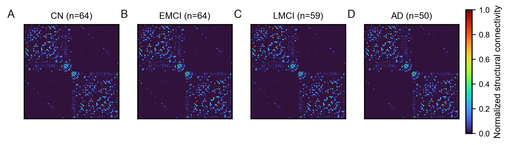
Topological Lesion Prediction Engine and Hub Vulnerability Hypothesis
After clarifying the hidden evolutionary patterns of structural connections within the AD continuum, a critical theoretical neuroscience question remains to be answered: does the topological status of specific brain regions determine their vulnerability during future disease progression? To test, we constructed a topological lesion prediction engine spanning three disease stages (EMCI, LMCI, AD) and performed regression analyses against four graph-theoretical metrics representing nodal topological status.
Underlying quantification of structural lesion indices and topological features: We subtracted the group-average matrices of the three disease stages (EMCI, LMCI, AD) from the healthy control group (CN) to obtain difference matrices, calculating the total loss of edge weights for each node. Subsequently, this was uniformly divided by the "absolute maximum connection loss" observed across the entire disease continuum. This rigorous normalization (Normalized Lesion Count) ensures that the extent of damage across different disease stages is strictly comparable under the same physical dimension. Simultaneously, we extracted four core baseline topological features from the healthy network backbone of the CN group: Eigenvector Centrality (assessing global nodal importance), Clustering Coefficient (quantifying local segregation capacity), Local Efficiency (measuring the robustness of information transfer), and Participation Coefficient (calculated after delineating multi-quadrant communities based on Graph Laplacian eigenvectors).
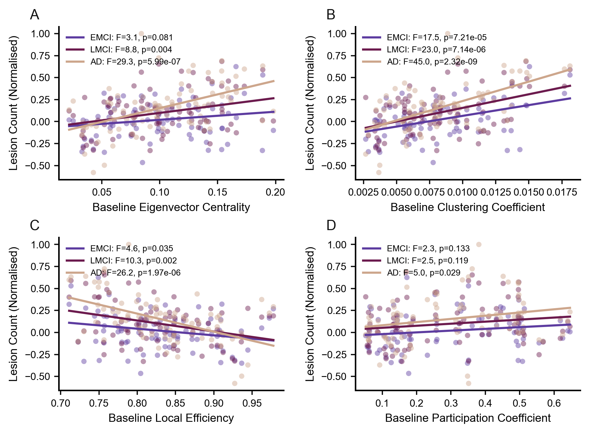
Multi-track regression analysis and the "Hub Vulnerability Hypothesis": We utilized the four baseline topological metrics as independent variables and the normalized lesion counts of each disease stage as dependent variables, executing three parallel Ordinary Least Squares (OLS) linear regressions and F-tests (as shown in Fig. fig:simulation_results). The results reveal a remarkably brutal pathological rule: metrics representing global hubs and dense interconnectivity (Fig. fig:hub_vulnerability_regressionA, B, D) all exhibit significant positive slopes. This implies that super-hubs with more central topological status and higher participation in the healthy brain surprisingly suffer more severe physical structural damage during disease evolution. This phenomenon perfectly corroborates the "Hub Vulnerability Hypothesis" of AD. Because these core nodes bear the brain's largest information throughput and metabolic load, they become "epicenters" for the cross-modular propagation of pathological toxic proteins (such as Amyloid-$\beta$ and Tau). Conversely, nodes with higher local efficiency (Fig. fig:hub_vulnerability_regressionC) exhibit a negative correlation, indicating that small-world architectures with high local redundancy can, to some extent, resist global network avalanches.
Step-wise exacerbation of the pathological cascade and dynamical collapse: The regression lines perfectly differentiate the step-wise hierarchy of disease progression. As the disease deteriorates from EMCI (blue line) and LMCI (yellow line) to the terminal AD stage (red line), the intercepts of the regression lines are substantially elevated, the slopes become increasingly steeper, and statistical significance erupts across the board (e.g., $F=45.0, p=2.32 \times 10^{-9}$ for the clustering coefficient in the AD stage). This "hidden to explosive" temporal evolution demonstrates that, as the pathological cascade intensifies, the collapse of whole-brain structure constitutes a precise "targeted attack" on core hubs. This empirical finding forms an astonishing theoretical closed-loop with our previous dynamical simulations: it is precisely because those super-hubs---which ought to "entrain whole-brain synchronization"---suffer the most severe degenerative damage in the disease, that the brain loses the physical load-bearing walls for macroscopic dynamical phase-locking, ultimately leading to total cognitive collapse.
Macroscopic Synchronization Collapse and Phase Transition Delay in the Disease Continuum
We further evaluate their catastrophic consequences at the functional level. By injecting the empirical structural matrices of the four clinical cohorts into the Kuramoto oscillator network as spatial constraints, we directly measure the destructive impact of pathological topology on macroscopic collective synchronization capabilities.
Subtle yet robust step-wise delay in dynamic phase transitions: By continuously tuning the global cortical coupling strength ($\lambda \in [0, 0.05]$), we fully tracked the phase transition of the brain from chaotic disorder to global synchronization ($R \to 1$). As depicted in Fig. fig:kuramoto_adni_sync, although the phase transition curves of the four disease stages appear visually proximate, they exhibit a strict, stable, and consistent rightward shift across the entire disease continuum. We also conducted comprehensive trials incorporating varied random seeds, different noise parameters, and diverse initial state conditions. The CN and EMCI networks consistently maintain a leading position during the phase transition, whereas the terminal AD network demonstrates a small but exceptionally robust dynamical lag throughout the entire critical evolution regime.
Substantial elevation of the critical coupling threshold ($\lambda_c$): In physics, this stable rightward shift is equivalent to a substantial elevation in the critical coupling threshold required to achieve macroscopic phase-locking. Within the critical phase transition regime ($\lambda \in [0.015, 0.030]$), while the absolute numerical differences among CN, EMCI, and LMCI are relatively marginal, the AD group systematically and significantly deviates downward from the healthy baseline. This implies that the AD network demands a higher coupling strength to reach the same level of global coherence as the healthy brain. Such a phenomenon indicates that a persistent "synchronization resistance" accumulates within the pathological network, rendering the transition toward an ordered state increasingly difficult.
Deep physical mechanisms of structure-function decoupling: This subtle yet robust dynamical lag forms a perfect theoretical closed-loop with the "hub vulnerability hypothesis" revealed previously. In the brain, super-hubs originally serve as "pacemakers" responsible for lowering the energy barrier for global synchronization; it is precisely because they suffer exceptionally severe targeted degenerative damage that the network completely loses its high-speed information routing capability. To compensate for the absence , the surviving brain regions are forced to demand disproportionately high effective coupling strengths. However, constrained by realistic physiological limits, the brains of AD patients are unable to provide this excessive compensatory coupling, which inevitably drives the cortical rhythm to slip into an irreversible desynchronized state, directly inducing significant clinical phenotypes.
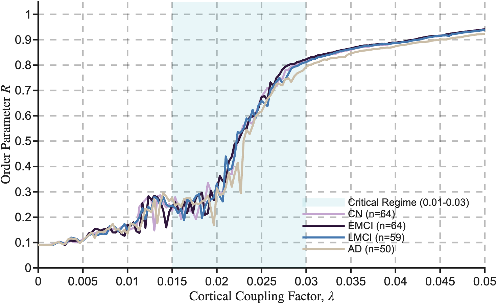
Perturb Rescue: Causal Validation of Structural-Functional Coupling
Whether a definitive causal relationship exists between AD’s dynamical manifestations and the impairment of central hubs remains to be verified. To address this, we employed an "In silico Perturbation-Rescue" framework to validate whether there is a deterministic causal law between impaired structural connectivity and the observed dynamical lag—specifically, whether precisely repairing specific topological nodes can fully reverse the system's dynamical collapse.
Causal perturbation framework under controlled variables: Using the AD empirical network as a pathological baseline, we constructed two virtual intervention models:
- Targeted Rescue: utilizing CN network weights to replace the top 10\
- Random Rescue: randomly selecting an equivalent number of nodes for weight replacement. To ensure that dynamical differences originated solely from fine-tuning the network topology, we maintained unified initial frequency distributions, initial phases, and noise paths across all experimental groups.
Subtle dynamical response under causal validation: Simulation results (as shown in Fig. fig:rescue_experiment) reveal that the sensitivity of the dynamical system to local topological perturbations is limited. Within a broad range of coupling strengths, the Targeted Rescue group exhibits a trajectory slightly shifted toward the healthy state compared to the AD baseline and the Random Rescue group, with the Targeted Rescue group showing a marginally greater magnitude of improvement. Although this improvement is subtle, it consistently emerges across multiple repetitions.
Preliminary conclusion and limitations: By comparing the differences between Targeted Rescue and Random Rescue, we have demonstrated a certain causal association within structural-functional coupling. However, given that these differences are not exceptionally substantial, this conclusion remains preliminary. Future studies may further validate these findings by expanding the sample size and optimizing the computational processes.
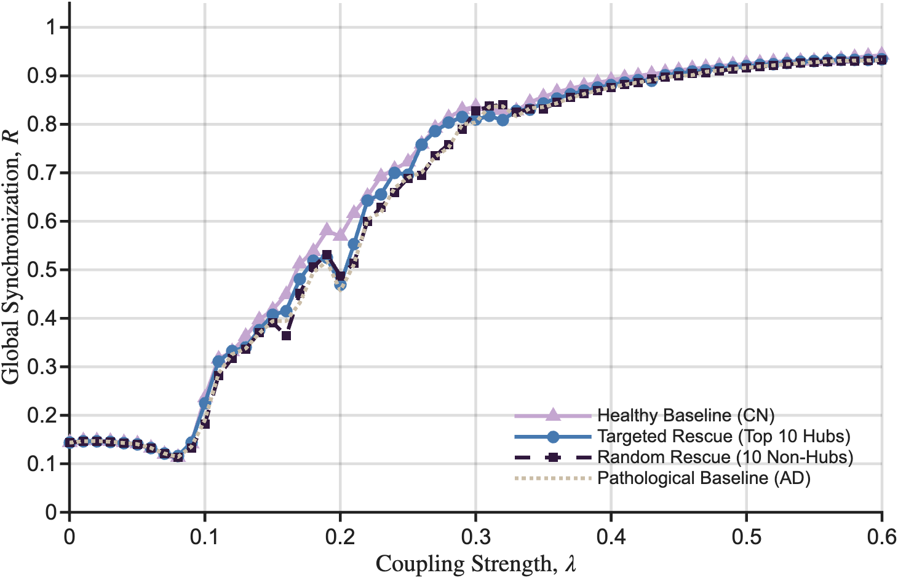
Resynchronization Dynamics of Circadian Brain Oscillators}\label{sec:circadian
In previous sections, we focused on how structural brain networks support or disrupt
large-scale synchronization, especially in the context of Alzheimer's disease. However, brain
synchronization is not only a static ability to reach a coherent state, but also a dynamic
capacity to recover coherence after external perturbations. This motivates us to further
examine a related problem: how a population of biological oscillators resynchronizes after a
sudden phase shift.
A representative biological example is the circadian rhythm regulated by the suprachiasmatic
nucleus (SCN). The SCN consists of a large population of pacemaker neurons whose collective
phase determines the internal circadian time of the organism. After rapid travel across time zones,
the external light-dark cycle changes abruptly, while the internal circadian oscillator cannot
instantly adapt to the new environmental phase. The recovery process from jet-lag can
therefore be interpreted as a resynchronization process of coupled neural oscillators under
external forcing.
Here, we analyze the model proposed by Lu et al. [Lu2016JetLag]
as an additional case study of brain-network synchronization. Compared with the anatomical
AAL-90 model used above, the SCN model is more phenomenological and low-dimensional.
Nevertheless, it provides a clear dynamical picture of how neural oscillators recover from
phase perturbations and complements our previous analysis of synchronization collapse and
rescue in pathological brain networks.
Forced Kuramoto Description of Circadian Resynchronization
We describe the SCN as a population of globally coupled phase oscillators subjected to periodic external forcing. The phase dynamics of the oscillator $i$ is
=
\omega_i
+
\frac{K}{N}\sum_{j=1}^{N}\sin(\theta_j-\theta_i)
+
F\sin(\sigma t-\theta_i+p(t)),\]
where $\theta_i$ denotes the phase of the $i$-th SCN neuron, $\omega_i$ is its intrinsic frequency, $K$ is the coupling strength among the SCN oscillators, and $F$ is the strength of the external drive during the day. The driving frequency is fixed as $
\sigma = \frac{2\pi}{24}\ \mathrm{h}^{-1}.
$
The parameter $p(t)$ represents the phase of the local time zone. Rapid travel across time zones is modeled as an instantaneous phase shift,
\begin{cases}
p_1, & t\leq s,\\
p_2, & t>s,
\end{cases}\]
where $s$ is the travel time. The phase difference $\Delta p = p_1-p_2$ determines the direction and magnitude of the travel. Here, $\Delta p>0$ corresponds to the westward travel, while $\Delta p<0$ corresponds to the eastward travel.
As in the previous sections, collective synchronization is characterized by a complex order parameter. In a frame rotating with an external 24-hour drive, it is defined as
=
\frac{1}{N}
\sum_{j=1}^{N}
e^{i[\theta_j(t)-\sigma t-p_2]}.\]
The modulus $|\tilde{z}|$ measures the coherence of the SCN oscillator population. A large value of $|\tilde{z}|$ indicates strong internal synchronization, while the phase of $\tilde{z}$ describes the alignment between the internal circadian rhythm and the external light-dark cycle.
Assuming a Lorentzian distribution of intrinsic frequencies,
=
\frac{\Delta}{\pi[(\omega-\omega_0)^2+\Delta^2]},\]
the Ott--Antonsen reduction gives a closed low-dimensional equation for the macroscopic order parameter:
=
\frac{1}{2}
\left[
(K\tilde{z}+F)-\tilde{z}^2(K\bar{\tilde{z}}+F)
\right]
-
(\Delta+i\Omega)\tilde{z},\]
where
This reduction is important because it connects the microscopic Kuramoto description of many SCN neurons to a simple macroscopic phase-space picture. In this sense, the model plays a similar role to our large-scale brain network simulations: both describe how heterogeneous neural oscillators form, lose, and recover collective synchronization.
Phase-Space Mechanism of East--West Asymmetry
After the trip, the circadian state does not start from the attractor of the new time zone. Instead, if the system was entrained before the trip, the initial condition in the new rotating frame becomes
where $\tilde{z}_{\mathrm{st}}$ is the stable entrained state in the destination time zone. The resynchronization is then represented by the trajectory of $\tilde{z}(t)$ returning to $\tilde{z}_{\mathrm{st}}$.
The phase portrait of the reduced system explains why eastward and westward travel can have different recovery times. Depending on the parameters $K$, $F$, $\Delta$, and $\Omega$, the macroscopic dynamics may contain only one stable fixed point, or may additionally contain a saddle point and an unstable fixed point. When a saddle exists, its stable manifold separates trajectories that return to entrainment through different directions in phase space. As a result, two trips with similar time-zone changes may show very different recovery routes and recovery times.
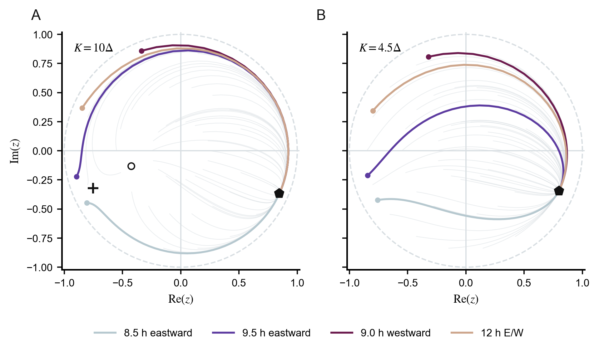
This mechanism gives a dynamical explanation for the well-known east--west asymmetry of jet lag. Westward travel usually corresponds to a phase delay and often follows a relatively direct recovery path. Eastward travel requires phase advance, which can be dynamically more difficult. For sufficiently large eastward shifts, the system may even recover through the opposite direction in phase space, leading to a much longer transient. Thus, the asymmetry is not merely a behavioral phenomenon, but emerges naturally from the nonlinear geometry of the synchronized oscillator state.
Recovery Time and Dependence on Coupling and External Drive
To quantify recovery, we define the distance from the entrained state as
The system is considered resynchronized when $d(t)$ falls below a small threshold. Using biologically motivated parameters, the model predicts that recovery is generally faster after westward travel than after eastward travel. The longest recovery time appears near large eastward shifts, where the initial condition lies close to the separatrix associated with the saddle point.
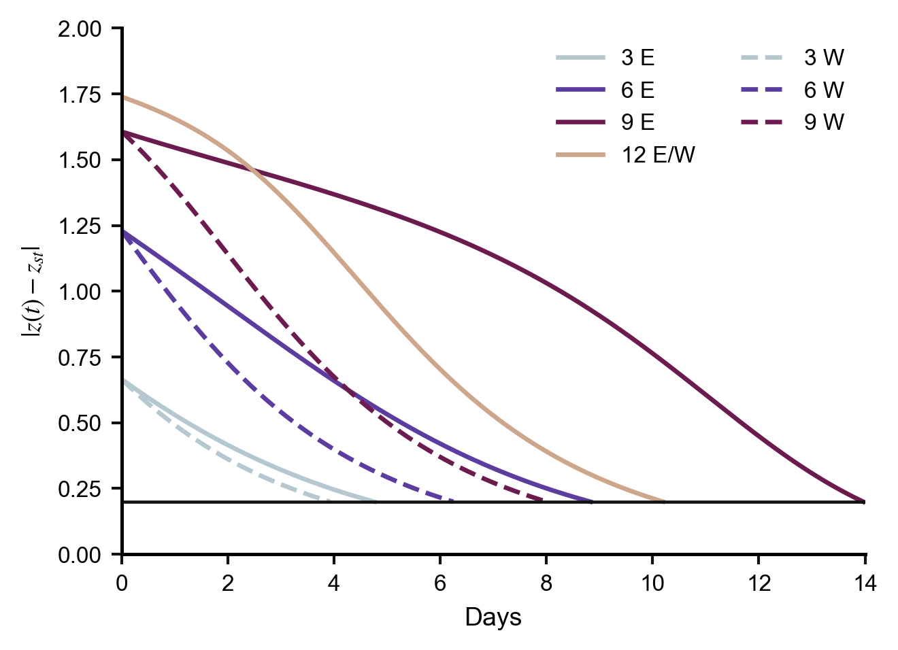
The model also clarifies how physiological and environmental parameters affect resynchronization. Increasing external forcing strength $F$ accelerates recovery, consistent with the empirical observation that strong light exposure helps reduce jet lag. Increasing internal coupling strength $K$ improves coherence among SCN oscillators, but can also reshape the phase-space structure and create saddle-related slow transients in certain parameter regimes. The frequency mismatch $\Omega$ controls the intrinsic bias of the circadian system relative to the 24-hour environment. Since the natural human circadian period is often slightly longer than 24 hours, the system is biased toward phase delay, making westward adjustment generally easier than eastward adjustment.
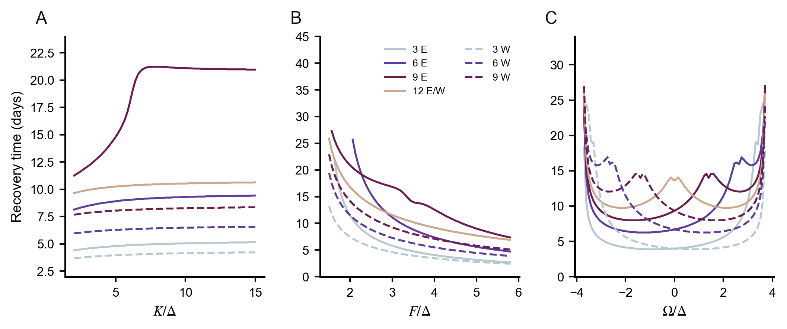
Connection to Large-Scale Brain Synchronization
Although the SCN circadian model is much smaller and more idealized than the AAL-based cortical connectome model, it complements our previous results in an important way. The AD analysis focused on how structural network damage elevates the critical coupling threshold and delays the formation of global synchrony. The circadian model instead focuses on how an already synchronized neural oscillator system returns to synchrony after an external phase perturbation.
Together, these two parts emphasize a unified view of brain synchronization. Healthy brain networks must not only support coherent collective dynamics but also maintain the ability to flexibly resynchronize after perturbations. In cortical networks, this capacity is strongly dependent on anatomical hubs and structural integrity. In the SCN, it depends on the interaction between oscillator coupling, external forcing, and intrinsic frequency mismatch. In both cases, synchronization is not a static property, but a dynamic process shaped by the structure of the network, the strength of coupling, and external constraints.
Conclusion
In this work, we systematically investigated synchronization emergence in brain networks through the Kuramoto model, bridging theory, simulation, and clinical translation.
Numerical experiments on synthetic topologies confirmed that scale-free networks synchronize at substantially lower coupling strengths than homogeneous graphs, highlighting the disproportionate role of network hubs (Sec. subsec:hetero). Building on this, we constructed a weighted structural connectome from the AAL-90 atlas and performed large-scale Kuramoto simulations on realistic brain topology (Sec. sec:connectome---sec:brain_sync). Three principal findings emerged. First, high-centrality cortical hubs act as topological pacemakers that lower the energy barrier for global synchronization. Second, targeted lesion of these hubs causes cascading dynamical degradation far exceeding random deletions, establishing a direct causal link between hub integrity and network synchronizability. Third, across the Alzheimer's disease (AD) continuum (CN $\rightarrow$ EMCI $\rightarrow$ LMCI $\rightarrow$ AD), we observed a consistent stage-dependent rightward shift in the synchronization phase transition, traced to the selective degeneration of high-centrality hubs. In silico perturbation-rescue experiments further demonstrated that targeted repair of the top 10\
Several limitations of the present study should be acknowledged. The Kuramoto model, while analytically tractable, abstracts away conduction delays, excitatory--inhibitory balance, and higher-order coupling motifs present in real neural systems. The AAL-90 parcellation provides only a macroscopic view of structural connectivity, and the AD connectome data represent group-averaged templates rather than individual-level networks. Furthermore, our perturbation-rescue experiments, though causally suggestive, yield effect sizes that call for larger samples and more refined intervention protocols.
Future work may extend this framework in at least three directions. Theoretically, incorporating time-delayed coupling and noise into the connectome-based simulations could better capture the metastable dynamics characteristic of resting-state brain activity. Clinically, developing patient-specific connectome models -- potentially informed by individual diffusion MRI and longitudinal cognitive scores -- may enable personalized predictions of disease trajectory and treatment response. Methodologically, integrating the Kuramoto synchronization analysis with machine learning classifiers trained on topological and dynamical features could yield early biomarkers for neurodegenerative disorders. More broadly, the conceptual pipeline demonstrated here -- from physical model to structural connectome to clinical phenomenology -- may prove useful for studying synchronization-related pathologies beyond Alzheimer's disease.
Codes Availability
Codes are wrapped and sent with this report, and are also included in the \faGithub\ GitHub repository https://github.com/JunfengLyu/Brain\_Synchronization\_Kuramoto. An online extended interactive webpage is also made and can be viewed at https://junfenglyu.github.io/Brain\_Synchronization\_Kuramoto/.
Acknowledgment and Collaboration
We thank Prof. Tao and Prof. Champer for practical guidance and suggestions in the presentation session to help us reorganize the logic of the whole program and set the main body of the report to the brain network simulation and extension.
All team members contribute equally to the whole project including brainstorm, presentation, and this final report.